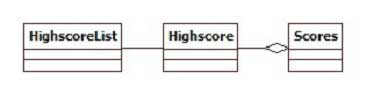
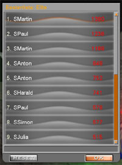

| Computer Graphics TU Braunschweig |
Der Highscore stellt einen Manager für die vom Nutzer erzielten Resultate da. Er verwaltet die erzielten Punkte und kann sie an anderen Modulen, wie dem Menü, zur Darstellung oder Verarbeitung übergeben. Im Spiel werden drei Schwierigkeitstufen unterschieden. Innerhalb der Highscore sind die vom Spieler erzielten Punkte den Schwierigkeitsstufen entsprechend zugeordnet.
Sollten der Highscore keine Daten zur Verfügung stehen, zum Beispiel nach einer Neuinstallation, so wird eine XML-Datei mit sortierten Zufallswerten und zugehörigen Spielernamen für jeden Schwierigkeitsgrad generiert und als Grundlage für die Highscore genutzt.
Während jedes Spiel erhält der Spieler Punkte für seine Leistung. Kehrt der Spieler nach Beenden des Spiels in das Hauptmenü zurück, so wird er mittels eines Prompts gefragt, ob er seine erreichte Punktezahl speichern möchte. Der Prompt bietet ihm die Möglichkeit seinen vordefinierten Spielernamen noch einmal zu ändern und bietet an, die Punktezahl an den Online-Highscore zu übertrag. Bestätigt der Spieler den Prompt, so wird der erzielte Punktestand an die Highscore übergeben und von dieser in die für den Schwierigkeitsgrad richtige Liste einsortiert und in die XML-Datei geschrieben.
Weiterhin bietet die Highscore anderen Modulen die Möglichkeit, die gespeicherten Punktestände der einzelnen Schwierigkeitsgrade abzufragen. Auf diese Funktionalität der Highscore greift auch die Highscore Ausgabe im Menü zurück.
Darüber hinaus bietet die Highscore dem Nutzer die Möglichkeit die Listen einzelner oder aller Schwierigkeitsstufen zu löschen. Das Aufrufen dieser Löschfunktionen geschieht im Highscoremenü.
Die Haltung der Scores wird durch die vom Highscore selbst generierte XML-Datei vollzogen.
|  |  |
| (a) Highscore UML-Diagramm | (b) Highscore Screenshot |
TU Braunschweig
- Fakultät für Mathematik und Informatik
- Computer Graphics - Teamprojekt Canyonshooter
{kind=link}
{kind=link}